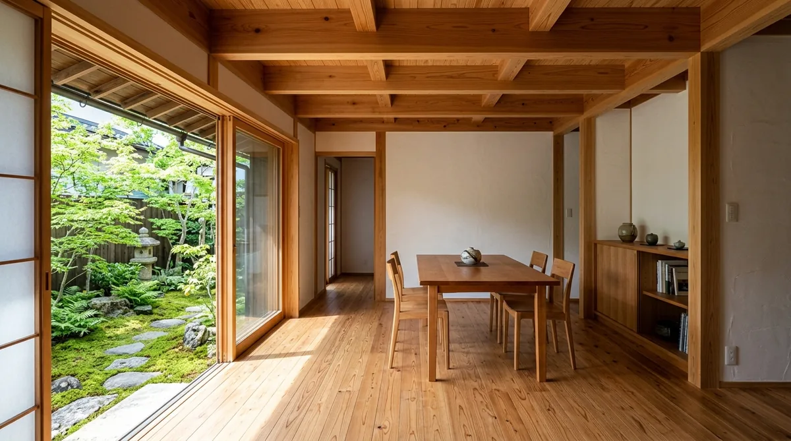
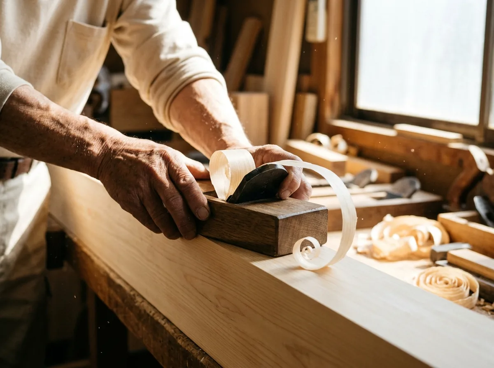

縁側と土間がつなぐ、南向きの平屋
平屋・新築 ／ 奈良県生駒市深い軒が夏の強い陽射しを遮り、冬はリビングの奥まで陽だまりを運ぶパッシブ設計。庭の緑と室内がゆるやかにつながります。
延床 98.5㎡
耐震等級3 / UA値 0.41
耐震等級3 / UA値 0.41
地域密着・手刻みの木の家

01 / PHILOSOPHY
私たちが建てるのは、完成した瞬間がいちばん新しい家ではありません。家族の歩幅や季節の光を吸い込み、十年、三十年と歳月を重ねるほどに艶と愛着が増していく木の住まいです。
営業担当を置かず、最初のヒアリングから敷地調査、設計、作業場での墨付け・手刻み、そして引き渡し後の定期点検まで、建築士と自社大工が同じ顔ぶれで伴走します。
48年
地域に根ざした建築実績
320棟
累計新築・改修お引き渡し
8棟
品質を守るための年間上限
02 / SPECIFICATION
項目を選ぶと詳細仕様が切り替わります
MATERIAL / 01
土台と柱には防蟻性と粘りに優れた紀州檜、床には素足に心地よい吉野杉の無垢板を採用。壁は調湿・消臭作用のある漆喰塗りを標準とし、新建材や化学接着剤を極力排した澄んだ空気を保ちます。

03 / CRAFTSMANSHIP
同じ山から切り出された木でも、南向きに育った側と北側では強度も反りの向きも異なります。自社作業場で一本ずつ木目を見極め、適材適所に組むことで、数十年後も建具が軽く開く狂いの少ない骨格が生まれます。
04 / ARCHIVE
すべて一棟ごとの自由設計です
深い軒が夏の強い陽射しを遮り、冬はリビングの奥まで陽だまりを運ぶパッシブ設計。庭の緑と室内がゆるやかにつながります。
生活リズムの違う親世帯と子世帯が、中庭の紅葉を共有しながらほどよい距離感で暮らせるコの字型プラン。
住宅密集地でも明るさを確保するため2階リビングを採用。大工造作の本棚とワークデスクで空間を無駄なく活用。
05 / VISIT & CONSULTATION
毎月開催している完成見学会・作業場見学のほか、土地探しや資金計画の個別相談を無料で承っています。売り込みや訪問営業は一切行いません。
完全予約制・各回1組様ずつご案内
見学会・個別相談を予約する